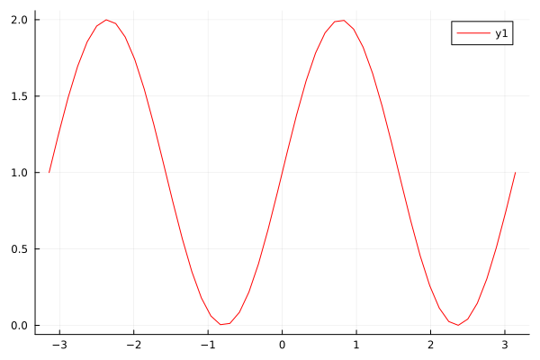
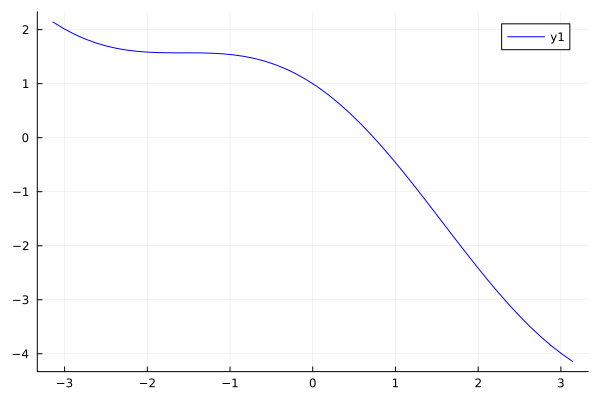
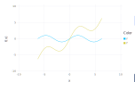

- Setup Julia Repo in GitHub with Actions
- Why Julia?
- Organizing and modularizing your code
- Julia as a calculator
Study Schedule (2023)
| Date | Range | Presenter |
|---|---|---|
| Aug 3 | Setup Julia Repo in GitHub with Actions | Norel |
| Aug 10 | Why Julia? | Kjeong |
| Aug 17 | Organizing and modularizing your code | Norel |
| Aug 24 | Julia as a calculator | Kjeong |
juliareposetup
Documentation for juliareposetup.
Images

Functions
This is a paragraph.
function func(x)
# ...
endAnother paragraph.
A code block without a "language":
function func(x)
# ...
endand another one with the "language" specified as julia:
function func(x)
# ...
end- link to Example.jl Documentation
- link to OpenCore Legacy Patcher
A paragraph containing a numbered footnote [1] and a named one [note].
Here's a quote:
Julia is a high-level, high-performance dynamic programming language for technical computing, with syntax that is familiar to users of other technical computing environments.
Another list:
- item one
- item two
f(x) = x - And a sublist:
- sub-item one
- sub-item two
\[f(a) = \frac{1}{2\pi}\int_{0}^{2\pi} (\alpha+R\cos(\theta))d\theta\]
This is the content of the note.
This is the content of the tip.
And this is another one.
This warning admonition has a custom title: "Beware!".
julia_repo_setup.barjulia_repo_setup.binomjulia_repo_setup.cosinejulia_repo_setup.fjulia_repo_setup.hellojulia_repo_setup.plusjulia_repo_setup.sine
julia_repo_setup.bar — Methodbar(x[, y])Compute the Bar index between x and y.
If y is unspecified, compute the Bar index between all pairs of columns of x.
Examples
julia> bar([1, 2], [1, 2])
1julia_repo_setup.binom — MethodHere's some inline maths: $\sqrt[n]{1 + x + x^2 + \ldots}$.
Here's an equation:
$\frac{n!}{k!(n - k)!} = \binom{n}{k}$
This is the binomial coefficient.
julia_repo_setup.cosine — Methodcosine(x)Calculate the cosine of an angle x given in radians.
julia_repo_setup.f — MethodHere's some inline maths: $\sqrt[n]{1 + x + x^2 + \ldots}$.
Here's an equation:
$\frac{n!}{k!(n - k)!} = \binom{n}{k}$
This is the binomial coefficient.
julia_repo_setup.hello — Methodhello(who::String)Return "Hello, who".
julia> hello("Stranger")
"Hello, Stranger"julia_repo_setup.plus — Methodplus(x, y)Calculate add x and y.
julia_repo_setup.sine — Methodsine(x)Calculate the sine of an angle x given in radians.
a = 1
b = 2
a + b3A = rand(3, 3)
b = [1, 2, 3]
A \ b3-element Vector{Float64}:
8.393789099909604
-10.446518512586868
9.615294441021895First we define some functions
f(x) = sin(2x) + 1
g(x) = cos(x) - xg (generic function with 1 method)and then we plot f over the interval from -π to π
x = range(-π, π; length=50)
plot(x, f.(x), color = "red")
and then we do the same with g
plot(x, g.(x), color = "blue")
plot([sin, x -> 2sin(x) + x], -2π, 2π)
printstyled("Here are some colors:\n"; color=:red, bold=true)
for color in 0:15
print("\e[38;5;$(color);48;5;$(color)m ")
print("\e[49m", lpad(color, 3), " ")
color % 8 == 7 && println()
end
print("\e[m")Here are some colors:
0 1 2 3 4 5 6 7
8 9 10 11 12 13 14 15
for i in 1:3
j = i^2Some text explaining what we should do with j
println(j)
end1
4
9julia> a = 11julia> b = 22julia> a + b3
println(iris)150×5 DataFrame
Row │ SepalLength SepalWidth PetalLength PetalWidth Species
│ Float64 Float64 Float64 Float64 Cat…
─────┼──────────────────────────────────────────────────────────────
1 │ 5.1 3.5 1.4 0.2 setosa
2 │ 4.9 3.0 1.4 0.2 setosa
3 │ 4.7 3.2 1.3 0.2 setosa
4 │ 4.6 3.1 1.5 0.2 setosa
5 │ 5.0 3.6 1.4 0.2 setosa
6 │ 5.4 3.9 1.7 0.4 setosa
7 │ 4.6 3.4 1.4 0.3 setosa
8 │ 5.0 3.4 1.5 0.2 setosa
9 │ 4.4 2.9 1.4 0.2 setosa
10 │ 4.9 3.1 1.5 0.1 setosa
11 │ 5.4 3.7 1.5 0.2 setosa
12 │ 4.8 3.4 1.6 0.2 setosa
13 │ 4.8 3.0 1.4 0.1 setosa
14 │ 4.3 3.0 1.1 0.1 setosa
15 │ 5.8 4.0 1.2 0.2 setosa
16 │ 5.7 4.4 1.5 0.4 setosa
17 │ 5.4 3.9 1.3 0.4 setosa
18 │ 5.1 3.5 1.4 0.3 setosa
19 │ 5.7 3.8 1.7 0.3 setosa
20 │ 5.1 3.8 1.5 0.3 setosa
21 │ 5.4 3.4 1.7 0.2 setosa
22 │ 5.1 3.7 1.5 0.4 setosa
23 │ 4.6 3.6 1.0 0.2 setosa
24 │ 5.1 3.3 1.7 0.5 setosa
25 │ 4.8 3.4 1.9 0.2 setosa
26 │ 5.0 3.0 1.6 0.2 setosa
27 │ 5.0 3.4 1.6 0.4 setosa
28 │ 5.2 3.5 1.5 0.2 setosa
29 │ 5.2 3.4 1.4 0.2 setosa
30 │ 4.7 3.2 1.6 0.2 setosa
31 │ 4.8 3.1 1.6 0.2 setosa
32 │ 5.4 3.4 1.5 0.4 setosa
33 │ 5.2 4.1 1.5 0.1 setosa
34 │ 5.5 4.2 1.4 0.2 setosa
35 │ 4.9 3.1 1.5 0.2 setosa
36 │ 5.0 3.2 1.2 0.2 setosa
37 │ 5.5 3.5 1.3 0.2 setosa
38 │ 4.9 3.6 1.4 0.1 setosa
39 │ 4.4 3.0 1.3 0.2 setosa
40 │ 5.1 3.4 1.5 0.2 setosa
41 │ 5.0 3.5 1.3 0.3 setosa
42 │ 4.5 2.3 1.3 0.3 setosa
43 │ 4.4 3.2 1.3 0.2 setosa
44 │ 5.0 3.5 1.6 0.6 setosa
45 │ 5.1 3.8 1.9 0.4 setosa
46 │ 4.8 3.0 1.4 0.3 setosa
47 │ 5.1 3.8 1.6 0.2 setosa
48 │ 4.6 3.2 1.4 0.2 setosa
49 │ 5.3 3.7 1.5 0.2 setosa
50 │ 5.0 3.3 1.4 0.2 setosa
51 │ 7.0 3.2 4.7 1.4 versicolor
52 │ 6.4 3.2 4.5 1.5 versicolor
53 │ 6.9 3.1 4.9 1.5 versicolor
54 │ 5.5 2.3 4.0 1.3 versicolor
55 │ 6.5 2.8 4.6 1.5 versicolor
56 │ 5.7 2.8 4.5 1.3 versicolor
57 │ 6.3 3.3 4.7 1.6 versicolor
58 │ 4.9 2.4 3.3 1.0 versicolor
59 │ 6.6 2.9 4.6 1.3 versicolor
60 │ 5.2 2.7 3.9 1.4 versicolor
61 │ 5.0 2.0 3.5 1.0 versicolor
62 │ 5.9 3.0 4.2 1.5 versicolor
63 │ 6.0 2.2 4.0 1.0 versicolor
64 │ 6.1 2.9 4.7 1.4 versicolor
65 │ 5.6 2.9 3.6 1.3 versicolor
66 │ 6.7 3.1 4.4 1.4 versicolor
67 │ 5.6 3.0 4.5 1.5 versicolor
68 │ 5.8 2.7 4.1 1.0 versicolor
69 │ 6.2 2.2 4.5 1.5 versicolor
70 │ 5.6 2.5 3.9 1.1 versicolor
71 │ 5.9 3.2 4.8 1.8 versicolor
72 │ 6.1 2.8 4.0 1.3 versicolor
73 │ 6.3 2.5 4.9 1.5 versicolor
74 │ 6.1 2.8 4.7 1.2 versicolor
75 │ 6.4 2.9 4.3 1.3 versicolor
76 │ 6.6 3.0 4.4 1.4 versicolor
77 │ 6.8 2.8 4.8 1.4 versicolor
78 │ 6.7 3.0 5.0 1.7 versicolor
79 │ 6.0 2.9 4.5 1.5 versicolor
80 │ 5.7 2.6 3.5 1.0 versicolor
81 │ 5.5 2.4 3.8 1.1 versicolor
82 │ 5.5 2.4 3.7 1.0 versicolor
83 │ 5.8 2.7 3.9 1.2 versicolor
84 │ 6.0 2.7 5.1 1.6 versicolor
85 │ 5.4 3.0 4.5 1.5 versicolor
86 │ 6.0 3.4 4.5 1.6 versicolor
87 │ 6.7 3.1 4.7 1.5 versicolor
88 │ 6.3 2.3 4.4 1.3 versicolor
89 │ 5.6 3.0 4.1 1.3 versicolor
90 │ 5.5 2.5 4.0 1.3 versicolor
91 │ 5.5 2.6 4.4 1.2 versicolor
92 │ 6.1 3.0 4.6 1.4 versicolor
93 │ 5.8 2.6 4.0 1.2 versicolor
94 │ 5.0 2.3 3.3 1.0 versicolor
95 │ 5.6 2.7 4.2 1.3 versicolor
96 │ 5.7 3.0 4.2 1.2 versicolor
97 │ 5.7 2.9 4.2 1.3 versicolor
98 │ 6.2 2.9 4.3 1.3 versicolor
99 │ 5.1 2.5 3.0 1.1 versicolor
100 │ 5.7 2.8 4.1 1.3 versicolor
101 │ 6.3 3.3 6.0 2.5 virginica
102 │ 5.8 2.7 5.1 1.9 virginica
103 │ 7.1 3.0 5.9 2.1 virginica
104 │ 6.3 2.9 5.6 1.8 virginica
105 │ 6.5 3.0 5.8 2.2 virginica
106 │ 7.6 3.0 6.6 2.1 virginica
107 │ 4.9 2.5 4.5 1.7 virginica
108 │ 7.3 2.9 6.3 1.8 virginica
109 │ 6.7 2.5 5.8 1.8 virginica
110 │ 7.2 3.6 6.1 2.5 virginica
111 │ 6.5 3.2 5.1 2.0 virginica
112 │ 6.4 2.7 5.3 1.9 virginica
113 │ 6.8 3.0 5.5 2.1 virginica
114 │ 5.7 2.5 5.0 2.0 virginica
115 │ 5.8 2.8 5.1 2.4 virginica
116 │ 6.4 3.2 5.3 2.3 virginica
117 │ 6.5 3.0 5.5 1.8 virginica
118 │ 7.7 3.8 6.7 2.2 virginica
119 │ 7.7 2.6 6.9 2.3 virginica
120 │ 6.0 2.2 5.0 1.5 virginica
121 │ 6.9 3.2 5.7 2.3 virginica
122 │ 5.6 2.8 4.9 2.0 virginica
123 │ 7.7 2.8 6.7 2.0 virginica
124 │ 6.3 2.7 4.9 1.8 virginica
125 │ 6.7 3.3 5.7 2.1 virginica
126 │ 7.2 3.2 6.0 1.8 virginica
127 │ 6.2 2.8 4.8 1.8 virginica
128 │ 6.1 3.0 4.9 1.8 virginica
129 │ 6.4 2.8 5.6 2.1 virginica
130 │ 7.2 3.0 5.8 1.6 virginica
131 │ 7.4 2.8 6.1 1.9 virginica
132 │ 7.9 3.8 6.4 2.0 virginica
133 │ 6.4 2.8 5.6 2.2 virginica
134 │ 6.3 2.8 5.1 1.5 virginica
135 │ 6.1 2.6 5.6 1.4 virginica
136 │ 7.7 3.0 6.1 2.3 virginica
137 │ 6.3 3.4 5.6 2.4 virginica
138 │ 6.4 3.1 5.5 1.8 virginica
139 │ 6.0 3.0 4.8 1.8 virginica
140 │ 6.9 3.1 5.4 2.1 virginica
141 │ 6.7 3.1 5.6 2.4 virginica
142 │ 6.9 3.1 5.1 2.3 virginica
143 │ 5.8 2.7 5.1 1.9 virginica
144 │ 6.8 3.2 5.9 2.3 virginica
145 │ 6.7 3.3 5.7 2.5 virginica
146 │ 6.7 3.0 5.2 2.3 virginica
147 │ 6.3 2.5 5.0 1.9 virginica
148 │ 6.5 3.0 5.2 2.0 virginica
149 │ 6.2 3.4 5.4 2.3 virginica
150 │ 5.9 3.0 5.1 1.8 virginicajulia> a = 1
1
julia> b = 2;
julia> c = 3; # comment
julia> a + b + c
6julia> div(1, 0)
ERROR: DivideError: integer division error
[...]julia> foo = 42
42julia> println(foo)
42julia> foo(2)
4julia> foo(2)
4julia> @time [1,2,3,4]
0.000003 seconds (5 allocations: 272 bytes)
4-element Vector{Int64}:
1
2
3
4julia> @time [1,2,3,4]
0.000003 seconds (5 allocations: 272 bytes)
4-element Vector{Int64}:
1
2
3
4